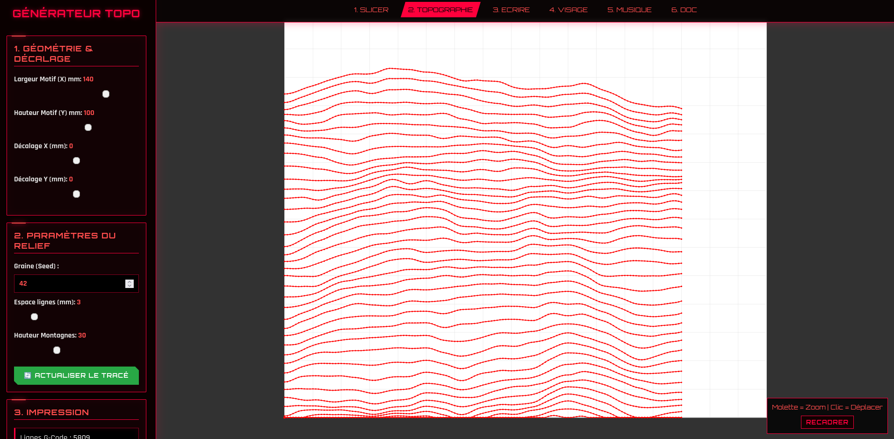

Module 2 : Le Générateur Topographique
Le Générateur Topo est le module d'art génératif de la MachineThatDraws. Contrairement au Slicer qui reproduit une image existante, ce programme crée des dessins uniques en temps réel en s'appuyant sur des algorithmes mathématiques complexes. Le résultat est un paysage en relief ("wireframe landscape") prêt à être tracé physiquement.

1. Le Cœur de l'Algorithme : Le Bruit de Perlin
Pour générer des montagnes et des vallées d'aspect naturel, nous n'utilisons pas de simples fonctions aléatoires (qui produiraient un bruit chaotique et illisible), mais l'algorithme du Bruit de Perlin (intégré via p5.js).
- La Graine (Seed) : L'algorithme repose sur une "graine" mathématique. En modifiant cette valeur (par exemple "42"), le relief change du tout au tout. Si vous réutilisez la même graine, vous obtiendrez exactement la même montagne. Le bouton "Actualiser" génère une graine aléatoire parmi 10 000 possibilités.
- L'Amplitude (Hauteur) : Ce paramètre agit comme un multiplicateur sur les valeurs du bruit de Perlin, définissant ainsi le dénivelé des montagnes (de 5 à 80 mm).
- La Résolution (Espace Lignes) : Définit l'écartement (en millimètres) entre chaque coupe horizontale du terrain. Un espace faible crée une carte très dense et sombre, un espace large crée une esthétique rétro-synthwave plus épurée.
2. Optimisation des Trajectoires (Zigzag & Filtrage)
Tracer des milliers de points peut prendre énormément de temps si le parcours n'est pas optimisé. Le programme intègre deux routines d'optimisation cruciales avant la génération du G-Code :
- Tracé en Zigzag : Au lieu de tracer chaque ligne de gauche à droite (ce qui obligerait la machine à lever le stylo et faire un long trajet à vide à chaque fin de ligne), le script inverse dynamiquement le sens de dessin une ligne sur deux (
reverseDirection). Le stylo dessine la ligne 1 vers la droite, descend, puis dessine la ligne 2 vers la gauche, assurant un tracé ininterrompu et un gain de temps considérable. - Filtrage des points superflus : Sur une ligne générée par le bruit de Perlin, beaucoup de points sont alignés ou extrêmement proches. Le script calcule la distance entre chaque sommet (
dist()). Si deux points sont séparés par moins de 0.5 mm, le point est ignoré. Cela allège drastiquement le poids du fichier G-Code sans aucune perte de qualité visuelle.
3. Contrôle Géométrique et Interface Fluide
L'interface a été pensée pour offrir un retour visuel ultra-réactif :
- Fenêtre de contrainte stricte : L'algorithme vérifie constamment les limites du plateau (170x140 mm). Tout point généré en dehors de cette boîte (grâce à la fonction
Math.max/min) est raboté ou ignoré, garantissant que la machine ne percutera jamais ses fins de course physiques (Crash). - Décalages X/Y : Permet de déplacer virtuellement la "caméra" au-dessus du relief généré pour cibler une chaîne de montagnes ou une vallée spécifique avant l'impression.
- Exploration au poignet : Le canvas intègre un système de Pan & Zoom personnalisé. L'utilisateur peut se déplacer sur la prévisualisation en maintenant le clic (Drag) et zoomer avec précision (Molette) pour inspecter les micro-détails du tracé rouge avant d'envoyer les commandes aux moteurs.
4. Transmission et Contrôle G-Code
Comme pour les autres modules, le Générateur Topo communique via l'API Web Serial. Les commandes de stylo (M3 S33 pour lever, M3 S0 pour baisser) s'intercalent parfaitement avec les déplacements rapides (G0) et les déplacements de travail (G1 F1500). Le script calcule d'ailleurs en temps réel une estimation précise de la durée du dessin en convertissant la distance totale des vecteurs en fonction de la vitesse des moteurs (F1500).